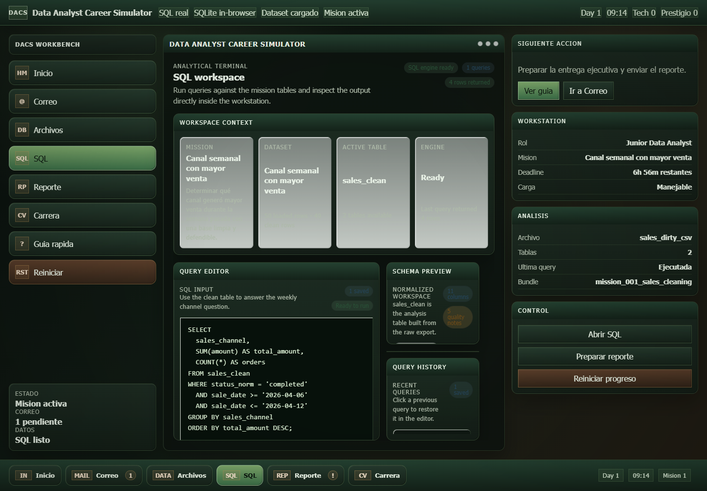

Problema
Mostrar dominio de datos de forma interactiva, no como dashboard estatico: el usuario debe recibir pedidos, priorizar, consultar datos, redactar conclusiones y vivir consecuencias por calidad o demora.
Simulador de primera semana laboral para analistas de datos. Combina correo interno, misiones, datasets locales, SQL real en navegador, reportes ejecutivos, deadlines, reuniones, stakeholders y progresion profesional persistente.

Captura real del simulador con mision activa, dataset cargado y consulta SQL ejecutada en navegador.
Web app funcional con tres misiones, persistencia local y flujo completo de trabajo analitico.
38 tests automatizados y captura real del flujo SQL sin modal de onboarding.
Demuestra producto, datos, UI, simulacion laboral y arquitectura modular en una sola pieza.
Publicacion standalone y nuevas misiones por producto, marketing, operaciones y finanzas.
Mostrar dominio de datos de forma interactiva, no como dashboard estatico: el usuario debe recibir pedidos, priorizar, consultar datos, redactar conclusiones y vivir consecuencias por calidad o demora.
Construir una SPA modular sin backend obligatorio, con `sql.js`, datasets locales, validadores declarativos y sistemas separados para agenda, feedback, misiones, carrera y notificaciones.
Experiencia navegable con home propio, guia de primeros pasos, reset local, tres misiones, consultas SQL reales, reporte con grafico, revisiones, follow-ups, reuniones y trayectoria profesional emergente.
Misiones declarativas con prerequisites, datasets, reglas de validacion, scoring y desbloqueo progresivo.
Runtime en navegador con `sql.js`, tablas limpias, query history, errores y resultados reales.
Correo, stakeholders, deadlines, agenda, reuniones, check-ins, follow-ups y ventanas de foco.
Prestigio, score tecnico, reputacion por area, seniority, compensacion simulada y performance reviews.
Una experiencia completa de entrenamiento laboral, con flujo narrativo y objetivos claros.
Separacion por sistemas, tests automatizados, validacion declarativa y runtime de datos local.
Mas misiones, capturas reales, metricas de progreso por ciclo y publicacion standalone.